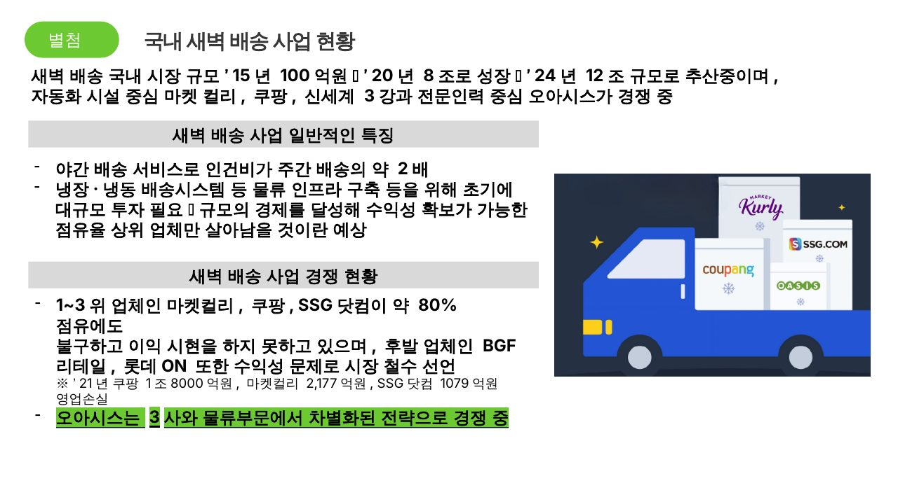
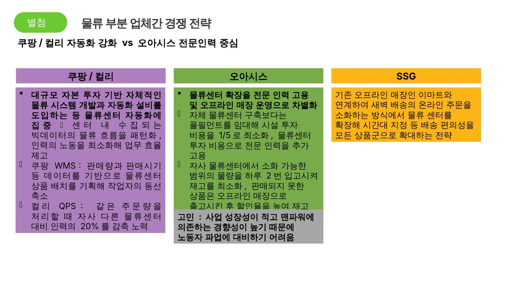
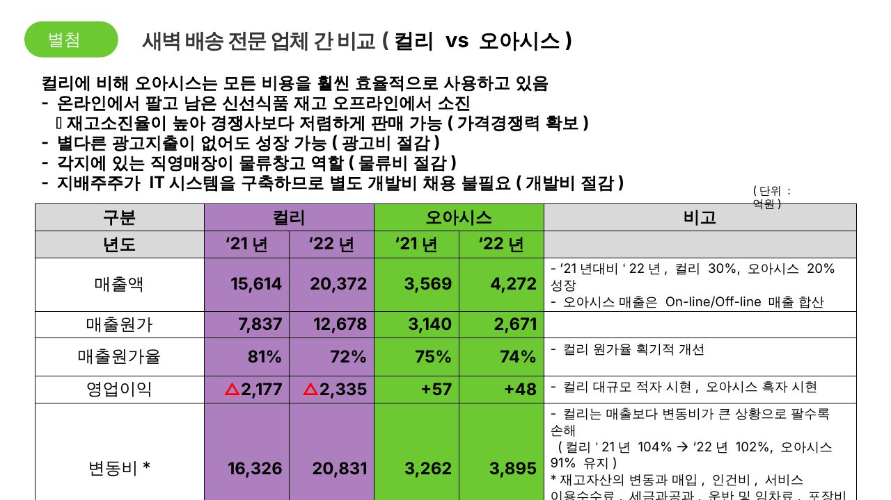
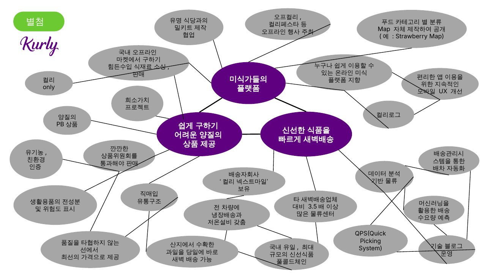

별첨. 참고 자료
국내 새벽배송 시장 현황, 물류 경쟁 전략, 컬리와의 비교 자료입니다.
A. 국내 새벽배송 사업 현황
- 시장 규모: 2015년 100억원 → 2020년 8조원 → 2024년 12조원 규모로 추산
- 마켓컬리·쿠팡·신세계(SSG닷컴) 3강과 전문인력 중심의 오아시스가 경쟁 중
- 야간 배송은 인건비가 주간 배송의 약 2배이고, 냉장·냉동 배송 인프라에 대규모 초기 투자가 필요
- 규모의 경제를 달성한 점유율 상위 업체만 살아남을 것이라는 예상
- 1~3위(마켓컬리·쿠팡·SSG닷컴)가 약 80% 점유에도 이익을 내지 못하고 있고, BGF리테일·롯데ON은 수익성 문제로 철수 선언
- 2021년 영업손실: 쿠팡 1조 8,000억원, 마켓컬리 2,177억원, SSG닷컴 1,079억원

원본 슬라이드 13 · 국내 새벽배송 사업 현황
B. 물류 부분 업체 간 경쟁 전략
쿠팡 · 컬리
- 대규모 자본으로 물류 자동화 설비 도입, 빅데이터 기반 물류 흐름 패턴화
- 쿠팡 WMS: 판매량·시기 데이터로 상품 배치를 짜 작업자 동선 축소
- 컬리 QPS: 같은 주문량을 자사 다른 센터 대비 인력 20% 감축
SSG
- 자체 센터 대신 풀필먼트 임대로 시설 투자비를 1/5로 최소화
- 하루 2번 입고로 재고 최소화, 남은 상품은 오프라인 매장으로 출고해 할인 처리
오아시스
- 전문 인력 중심 운영
- 고민: 사업 성장성이 낮고 맨파워 의존도가 높아 노동자 파업에 대비하기 어려움

원본 슬라이드 14 · 물류 부분 업체 간 경쟁 전략
C. 컬리 vs 오아시스 재무 비교
컬리에 비해 오아시스는 모든 비용을 훨씬 효율적으로 씁니다. 온라인에서 팔고 남은 신선식품을 오프라인에서 소진해 재고소진율이 높고 가격경쟁력을 확보하며, 광고비 없이 성장하고, 직영매장이 물류창고 역할을 하며, 지배주주가 IT시스템을 구축해 별도 개발비가 없습니다.
| 구분 | 컬리 | 오아시스 | 비고 |
|---|
| '21년 | '22년 | '21년 | '22년 |
|---|
| 매출액 | 15,614 | 20,372 | 3,569 | 4,272 | '22년 성장률: 컬리 30%, 오아시스 20%. 오아시스 매출은 온·오프라인 합산 |
| 매출원가 | 7,837 | 12,678 | 3,140 | 2,671 | |
| 매출원가율 | 81% | 72% | 75% | 74% | 컬리 원가율 개선 |
| 영업이익 | △2,177 | △2,335 | +57 | +48 | 컬리 대규모 적자, 오아시스 흑자 |
| 변동비* | 16,326 | 20,831 | 3,262 | 3,895 | 컬리는 매출보다 변동비가 커 팔수록 손해 (변동비율 '21년 104%, '22년 102% / 오아시스 91% 유지) |
단위: 억원 · *재고자산 변동, 매입, 인건비, 서비스 이용수수료, 세금과공과, 운반·임차료, 포장비 등

원본 슬라이드 16 · 새벽배송 전문 업체 간 비교
D. 원본 비교 슬라이드 (컬리 · 오아시스)
원본 발표 자료의 상세 비교 이미지입니다. 글씨가 작으므로 이미지를 클릭해 원본 크기로 확인하세요.
E. 컬리 Activity Map 비교
컬리와 오아시스는 신선식품 새벽배송, 유기농·친환경 인증, 양질의 PB 상품이라는 점에서 유사합니다. 차이는 물류 방식입니다.
- 오아시스: 숙련된 인력에 의존하는 물류, 가격경쟁력과 합포장·친환경 포장이 강점
- 컬리: 데이터 기반 물류 자동화에 투자 (QPS 시스템, 배송 수요 예측, 배차 자동화, 물류센터 3.5배 이상, 풀콜드체인)
- 컬리의 차별화: 희소가치 프로젝트, 수입 식재료 직구 대체, 컬리로그·오프컬리 등 '미식 플랫폼' 지향
- 다만 최근 컬리는 일반 공산품 비중과 잦은 할인이 늘어 고급화 이미지가 흐려진다는 평가도 있음

원본 슬라이드 12 · 컬리 Activity Map